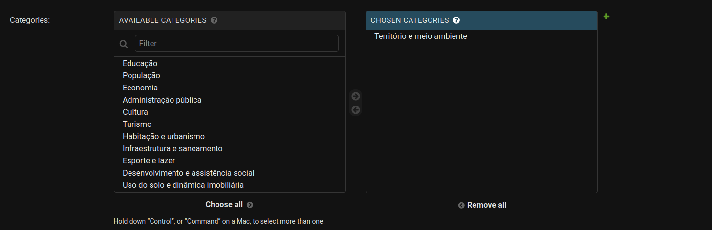
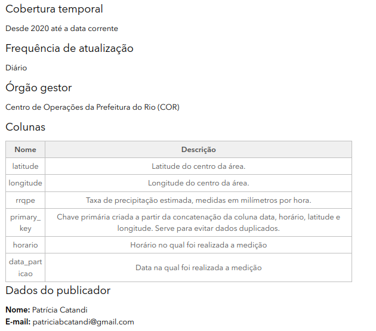

Metadados
O que são Metadados e para o que servem?
Metadados são informações utilizadas para descrever tanto sobre do que se trata a tabela em específico quanto para descrever em profundidade o que são cada uma das suas colunas. Eles servem para facilitar o entendimento e a utilização dos dados. Dessa forma, para cada tabela criada precisamos especificar através dos metadados o que cada coluna significa e o seu formato.
Aqui no Escritório de Dados armazenamos os seguintes campos no metadados:
A nível de tabela:
- descrição geral sobre o que são os dados;
- tags que ajudam a encontrar a tabela;
- categoria da tabela;
- órgão da prefeitura de origem dos dados;
- quem é a pessoa responsável pela publicação;
- frequência de atualização da tabela;
- entre outros...
A nível de coluna
- descrição de cada uma das colunas
- formato em que os dados estão salvos
- unidade de medida (se necessário)
- flag se a coluna tem dados sensíveis
E essas informações estão salvas no meta.dados.rio.
Tabela de Arquitetura e Normalização
As tabelas de arquitetura auxiliam na determinação da estrutura de cada tabela do conjunto de dados. Elas definem, por exemplo, o nome, ordem e alguns metadados das colunas, e como uma coluna deve ser tratada quando há mudanças em versões (por exemplo, se uma coluna muda de nome de um ano para o outro).
Cada tabela do conjunto de dados deve ter sua própria tabela de arquitetura (planilha), que pode ser preenchida no Google Drive ou localmente (Excel, editor de texto).
Baixe aqui a pasta template e renomeie para o nome do seu conjunto de dados. Seguindo nosso manual de estilo, nós renomeamos, definimos os tipos, preenchemos descrições e aplicamos a compatibilização entre anos para todas as variáveis (colunas). As tabelas de arquitetura preenchidas podem ser consultadas aqui.
-
Nome da coluna: nome da coluna. -
Tipo da Coluna: tipo de dado do BigQuery (veja quais são no nosso manual de estilo). -
Descrição da coluna: descrição dos dados que estão nesta coluna. -
Observações: observações de tratamento que precisam ser evidenciados. Indicar, por exemplo, porque determinada coluna foi criada ou modificada. -
Nome original da coluna YYYY: indicar o nome original de cada coluna para cada ano, no formatooriginal_name_YYYY. Essa etapa ajuda na normalização de tabelas, onde o nome de colunas podem mudar no tempo ou não existirem mais. Por isso, criamos colunas à direita em ordem descendente (e.g. 2020, 2019, 2018, ...).
O portal meta.dados.rio
O meta.dados.rio é o nosso repositório oficial de metadados. Podemos reaproveitar as informações já preenchidas na tabela de arquitetura para preencher os metadados das colunas

Os valores a serem preenchidos em cada campo devem ter sido validados por um profissional da IPLAN. Para mais detalhes olhar a documentação sobre o "Fluxo de Aprovação" descrito neste tutorial.
Como preencher?
Toda vez que criamos uma tabela nova precisamos entrar no meta.dados.rio e preencher os campos de Datasets (caso ele não exista), Projects (caso ele não exista) e Tables.
Dentro de Datasets podemos criar um dataset_id novo utilizando o botão ADD Dataset ou modificar alguma coisa ao clicar no nome do nosso dataset de interesse.
As principais informações que precisamos preencher sobre o dataset são:
- Name: qual o nome desse dataset. Tem que ser o mesmo nome definido no BigQuery.
- Title prefix: prefixo que aparecerá na frente do nome de cada tabela no data.rio
- Project: qual o nome do projeto que ele pertence dentro do BigQuery. Para ter essa tabela publicada no data.rio é necessário setar esse valor para 'datario'.

Para preencher as informações sobre a tabela criada podemos continuar no mesmo link do Dataset ou entrar na página Tables. Aqui, os campos a serem preenchidos são:
- Name: nome da tabela. Tem que ser o mesmo nome definido no BigQuery.
- Title: o título da tabela que irá aparecer no data.rio após o prefixo definido no dataset.
- Short description: resumo sobre os dados disponibilizados nessa tabela.
- Long description: descrição detalhada sobre os dados disponibilizados nessa tabela (limite de 200 caracteres).
- Update frequency: qual é a frequência de atualização desses dados (Anual, Mensal, Semanal, Diária, Nunca).
- Temporal coverage: qual a última data de atualização (ex: Até data corrente).
- Data owner: Órgão responsável pela criação e disponibilização dos dadaos.
- Publisher name: Nome da pessoa responsável pelo pipeline dos dados.
- Publisher email: E-mail da pessoa responsável pelo pipeline dos dados.
- Source database: Base de dados de origem.
- Source table: Nome da tabela de origem dos dados.
- Source query: Query utilizada na extração dos dados.
- Tags: Tags para facilitar a busca desses dados no data.rio. As tags obrigatórias estão relacionadas ao órgão que disponibilizou os dados (Ex: cor, alertario, sme, ...), sistema que originou os dados (Ex: comando), sinônimos, nome do datasetid e table_id. As tags devem ser escritas em minúsculo, sem acentos e o espaçamento de palavras dado por . Automaticamente são geradas as tags: escritorio_de_dados, datalake
- Categories: selecionar quais categorias se adequam aos seus dados.



Já para o preenchimento dos metadados das colunas os campos obrigatórios são:
- Original name: nome original da coluna. Tem que ser o mesmo nome definido no BigQuery.
- Name: nome que irá aparecer no data.rio.
- Type: se essa coluna é um INTEGER, FLOAT, DATE, DATETIME ou STRING.
- Description: Descrição detalhada do que representa essa coluna.
- Is sensitive: se essa coluna possui um dado sensível que não deve ser publicado.
- Measurement unit: unidade do dado (se fizer sentido).

Onde ficam disponibilizadas as informações preenchidas?
Quando o projeto selecionado é o datario, os metadados são disponibilizados no data.rio.
Nas figuras abaixo é possível verificar como ficaram os metadados dentro do data.rio com destaque para os campos Title prefix, preenchido nas informações do dataset, Title, Short e Long description que são preenchidos nas informações da tabela.


Fluxo de Aprovação
Antes de começar a construção da pipeline de dados é fundamental que tenhamos definidos quais serão os nomes do dataset, tabela e de cada uma das colunas.
Para garantir que todas as nomenclaturas estejam de acordo com o padrão pré-definido, precisamos que cada tabela criada no datalake passe por um fluxo de aprovação.
Esse fluxo inicia-se criando um card para cada uma das tabelas dentro do Trello do DataLake. Nesse Trello faremos o acompanhamento para todas as etapas de produtização dos dados.
Em seguida, deve-se criar uma pasta (se ela não existir) dentro da pasta "Bases" com o nome do seu dataset e copiando a mesma estrutura de arquitetura presente no template. Nesse template, você deve preencher ambas as abas com as informações solicitadas, lembrando que os nomes devem seguir o padrão definido no Manual de Estilo.
Os dados preenchidos devem ser validados em reunião com membros da IPLAN e do Escritório de Dados. Aqui temos como exemplo o preenchimento das informações da tabela de logradouros.
Se tudo estiver aprovado, as mesmas informações da planilha do Google Sheets devem ser preenchidas no site do meta.dados.rio conforme explicitado anteriormente.
E, por fim, pode-se dar início a construção da pipeline!